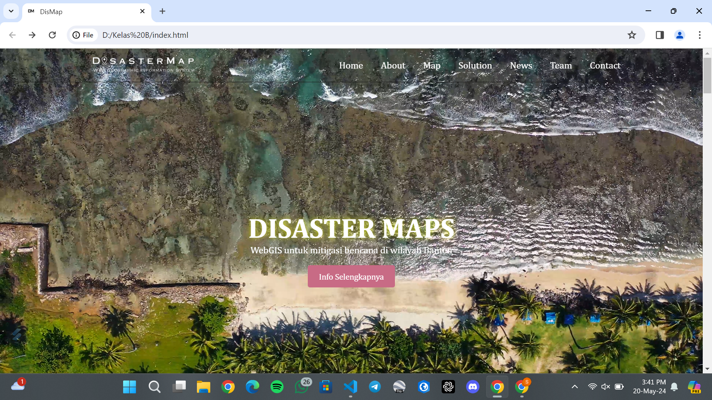
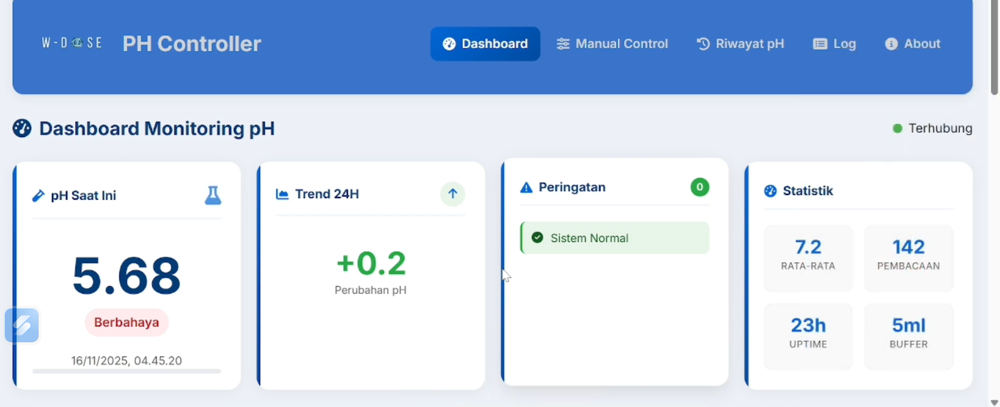
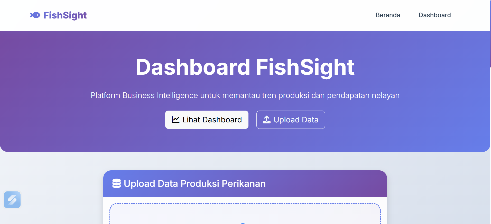

Saya mahasiswa Sistem Informasi Kelautan dengan minat dalam pemrograman web dan analisis spasial. Aktif dalam pengembangan solusi teknologi untuk sektor kelautan dan perikanan.
Sebagai mahasiswa Sistem Informasi Kelautan yang berpengalaman dalam pemrograman dan analisis spasial, saya dapat membantu Anda dalam berbagai solusi teknologi untuk sektor kelautan dan perikanan.
Lines of Code Written
Study Hours Spent
Projects Completed
Publications
Pengembangan aplikasi web menggunakan HTML, CSS, JavaScript, dan Python untuk solusi kelautan.
Analisis data spasial menggunakan ArcGIS Pro, Google Earth Engine, dan R untuk penelitian kelautan.
Pengelolaan dan analisis data menggunakan MySQL untuk sistem informasi kelautan.
Sedang menjalani magang di BPPSDM Kementrian Kelautan dan Perikanan, terlibat dalam proyek-proyek penelitian,Analisis GIS dan pengembangan Sistem Informasi Kelautan.
Aktif dalam organisasi kemahasiswaan, berpartisipasi dalam kegiatan akademik dan pengembangan soft skills di bidang kelautan.
Menerbitkan 1 publikasi jurnal dalam bidang sistem informasi kelautan yang membahas implementasi teknologi GIS untuk analisis data maritim.
Bisa Diakses Pada link ini https://jpips.fkip.unila.ac.id
/index.php/jpg/article/view/22.

WebGIS Untuk Mitigasi Bencana di Wilayah Banten.

Alat Dosing PH Otomatis Yang Terintegrasi Dengan Website Untuk Pemantauan dan Kontrol Jarak Jauh.

PENGEMBANGAN DASHBOARD VISUALISASI PRODUKSI PERIKANAN BERBASIS WEB UNTUK PENGELOLAAN SUMBER DAYA LAUT BERKELANJUTAN
Tertarik untuk berkolaborasi dalam proyek teknologi kelautan? Mari berdiskusi!